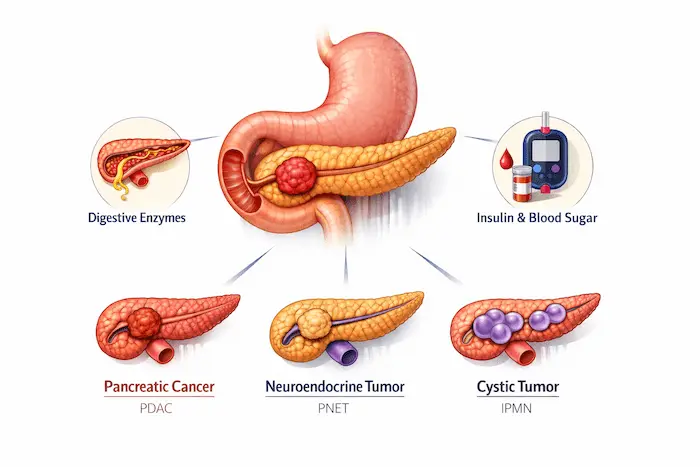
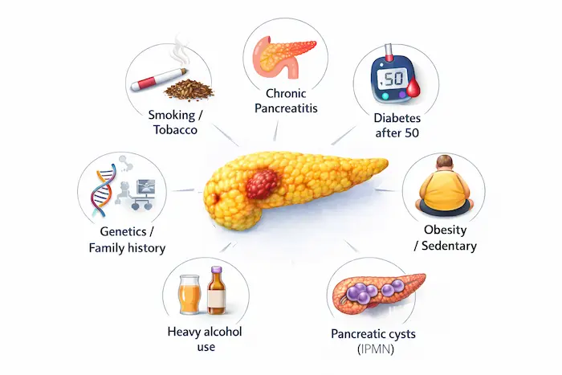
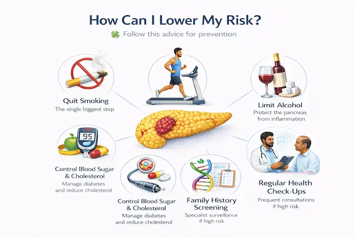
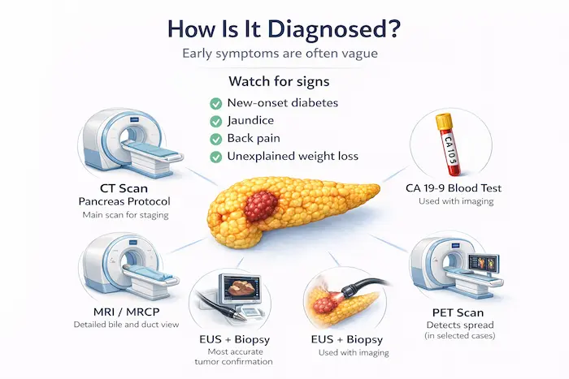
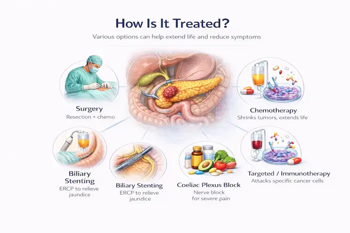
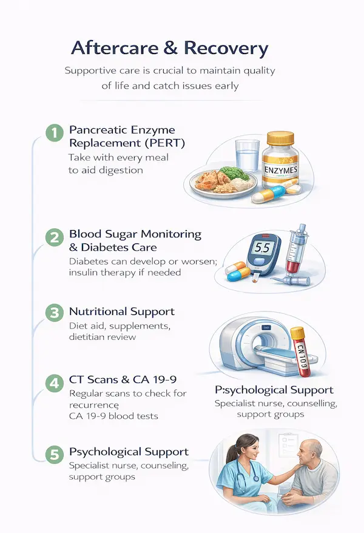

Risk factors, red flags, staging and the Whipple procedure explained in plain language — because pancreatic cancer is quiet until it is not.
National Cancer Prevention Month
Written for patients and their families — plain language, real answers.
Covering: Oesophageal | Stomach | Liver | Gallbladder | Bile Duct
Pancreatic | Small Bowel | Colon | Rectal | Anal | GIST | NETs
IMPORTANT NOTICE
This blog is for general health education only. It is not a substitute for professional medical advice, diagnosis, or treatment. Always speak with your own doctor or specialist about your personal health situation.
Warning Signs: When to See a Doctor
No matter which GI cancer we’re talking about, certain symptoms should always prompt a visit to your doctor without delay. They don’t automatically mean cancer — but they always deserve investigation:
Red Flag Symptoms — Never Ignore These
- Unexplained weight loss or loss of appetite
- Difficulty swallowing or pain when swallowing
- Persistent indigestion, heartburn, or abdominal pain
- Vomiting blood, or vomit that looks like coffee grounds
- Black, tarry, or bloody stools
- New jaundice — yellowing of skin or whites of the eyes
- Dark urine and pale/clay-coloured stools
- A change in bowel habits lasting more than 3 weeks
- Unexplained new anaemia (low blood count)
- New-onset diabetes after age 50, especially with weight loss
- A lump or swelling in the abdomen
- If you have any of these — please make an appointment with your GP today. Early detection genuinely saves lives.
About This Guide
This guide is brought to you by PancreaCare by Advitya Healthcares .This is one section from a 12-part GI cancer series, and each section follows the same structure—what it is, why it happens, how to lower your risk, how it’s diagnosed, how it’s treated (including what surgery involves), and what recovery looks like—so you can use the headings to jump to what you need, or read straight through, because knowledge is the best first step.
Pancreatic Cancer
What Is It?

The pancreas is a leaf-shaped gland tucked behind the stomach. It does two vital jobs: producing digestive enzymes (exocrine function) and making hormones like insulin to control blood sugar (endocrine function). Pancreatic cancer most commonly refers to pancreatic ductal adenocarcinoma (PDAC) — cancer of the cells lining the pancreatic ducts.
Other types include neuroendocrine tumours (PNETs), which behave quite differently and often grow more slowly, and cystic tumours (like IPMN — intraductal papillary mucinous neoplasm), which can be precancerous.
Why Does It Happen? (Causes & Risk Factors)

- Smoking or chewing tobacco is one of the most established risk factors
- Chronic pancreatitis (long-term pancreatic inflammation)
- New-onset diabetes after age 50, especially with weight loss, can sometimes be an early warning sign
- Obesity and a sedentary lifestyle
- Heavy, long-term alcohol use (via pancreatitis)
- Family history or genetic mutations (BRCA2, PALB2, ATM, Lynch syndrome)
- Certain precancerous cysts (e.g. high-risk IPMNs)
How Can I Lower My Risk?

- Stop smoking completely — this is the most impactful single step
- Maintain a healthy weight and exercise regularly
- Control blood sugar and cholesterol
- Limit alcohol intake to protect the pancreas from chronic inflammation
- If you have a strong family history or known gene mutation, ask about structured surveillance (EUS/MRI every 1-2 years at a specialist centre)
How Is It Diagnosed?

Pancreatic cancer is often caught late because early symptoms are vague. Remain alert to:
- New-onset diabetes (especially with weight loss), jaundice, back pain, or unexplained weight loss
- CT pancreas protocol: the main staging scan
- MRI/MRCP: for bile duct and pancreatic duct detail
- EUS (endoscopic ultrasound) with biopsy: most accurate for tumour confirmation
- CA 19-9 blood marker: used alongside imaging (not reliable alone)
- PET scan: in selected cases
How Is It Treated?

Only around 15-20% of pancreatic cancers are found early enough for potentially curative surgery. For the rest, effective palliative treatments are available:
- Resectable cancer: surgery followed by adjuvant chemotherapy (gemcitabine + capecitabine or FOLFIRINOX)
- Borderline resectable: neoadjuvant chemotherapy first to shrink the tumour, then reassess for surgery
- Locally advanced/metastatic: chemotherapy (FOLFIRINOX or gemcitabine-nab-paclitaxel), targeted therapy (for BRCA mutations: PARP inhibitors), immunotherapy in selected cases
- Biliary stenting: ERCP to relieve jaundice
- Coeliac plexus block: for severe pain control
- Enzyme replacement and nutritional support throughout
The Surgery: Whipple Procedure (Pancreaticoduodenectomy)
The Whipple is one of the most complex abdominal operations performed. It is used for cancers in the head of the pancreas. What is removed: the head of the pancreas, the first part of the small bowel (duodenum), the lower bile duct, the gallbladder, and sometimes part of the stomach. Three reconnections are then made: the remaining pancreas to the bowel (pancreaticojejunostomy), the bile duct to the bowel (hepaticojejunostomy), and the stomach to the bowel (gastrojejunostomy). Distal pancreatectomy: for cancers in the body or tail — removes the left side of the pancreas, often with the spleen. Total pancreatectomy: removes the entire pancreas — used in selected cases; results in insulin-dependent diabetes. Hospital stay: 7-14 days. Recovery: 6-8 weeks.
Aftercare & Recovery

- Pancreatic enzyme replacement therapy (PERT) — taken with every meal to aid digestion
- Blood sugar monitoring — diabetes can develop or worsen after surgery
- Insulin therapy if needed
- Nutritional support and dietitian review
- Regular CT scans and CA 19-9 monitoring
- Psychological support — a pancreatic cancer diagnosis is emotionally challenging; specialist nurse support is invaluable
Enzyme supplements are not optional after pancreatic surgery — without them, food passes through undigested, causing weight loss, fatty stools, and fatigue. Take them with every meal and snack, every time.
Have a question this article does not answer?
Send us your reports. A specialist reviews them before you travel, so the first visit begins with a plan rather than a repeat test.